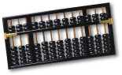
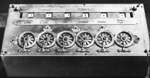
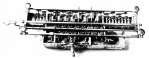
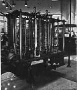
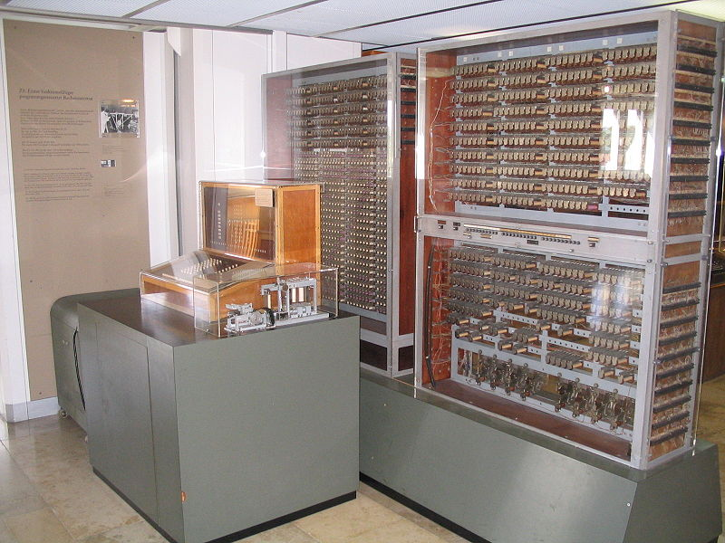
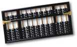
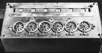
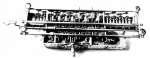
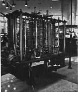
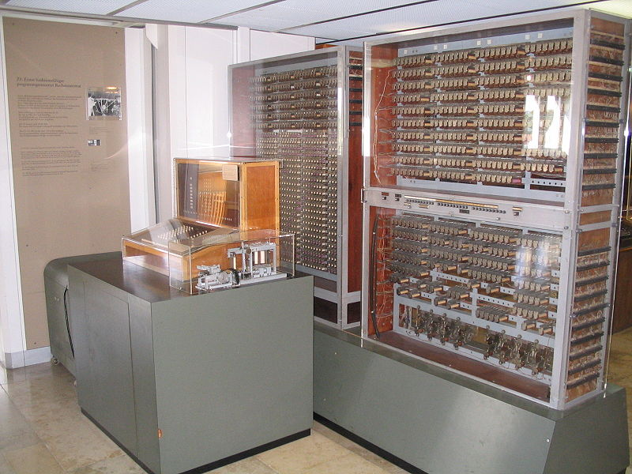

(Year)

(5000 BCE)

(1642)

(1694)

Lady Ada Lovelace, programmer;
(1833-1843 abandoned)

(1938)

(1945)
von Neumann architecture). (Possibly the first case of plagiarism in the computing industry)
In this lecture we will discuss the history of computing and explain why it is really a sequence of ideas in representing data, operations, and instructions.
A calculating device that can follow detailed instructions.
Note that this definition does not restrict computers to the digital devices we use these days. Computers weren't always digital, and they may not be digital in the future.
To create a computer one needs a way to represent
if-then, as we'll see
below).
Of course, modern computers manipulate much more than numbers and symbols: They can deal with objects such as images, movies, animations, sound, etc.
People have used a variety of materials over the years for these representations. In a sense, the history of computing is a history of representations. The table below shows just a few of the devices people have used over the centuries to compute. As you can see, they have used a variety of objects to represent numbers, operations and instructions.
For another version of this history, see the Wikipedia entry on the history of computing hardware. You can also look up the various devices on the web.| Numbers | Operations | Instructions | Computer |
Inventor (Year) |
Comments |
|---|---|---|---|---|---|
| beads | addition: moving beads | N/A |
abacus  |
Chinese, Sumerians (5000 BCE) |
Position of the beads correspond to numbers. Used even today! |
| dials | addition: rotating dials | N/A |
Pascaline  |
Blaise Pascal (1642) |
Hoping to help his tax-commissioner father, young Pascal developed this little device that could add reliably. |
| gears | addition, multiplication: stepped drum | N/A |
Leibniz's Stepped Reckoner  |
G.W. von Leibniz (1694) |
The stepped drum could accommodate repeated additions and subtractions, effectively enabling multiplication and division. |
| gears, punched cards | all arithmetic operations: gears on cylinder | decision making ("if-then"): mill |
Analytical Engine  |
Charles Babbage, inventor; Lady Ada Lovelace, programmer; (1833-1843 abandoned) |
Arguably the first design of a modern computer. We know a lot about it due to Lady Ada's detailed writings and her programs. Steam power enabled it to perform sequences of operations and even choose among multiple paths of execution. Unfortunately, never built, due to the complexity of the design and a cessation of funding. |
| metal bars in glass, punched film | all arithmetic operations: electricity | electro-mechanical |
Z3  |
Conrad Zuse (1938) |
Built in his livingroom, was offered to the German Army but it was not accepted. During WWII it was bombed and rebuilt better every time |
| vacuum tubes | all arithmetic operations: switches | complete set of control instructions: magnetic drums |
EDVAC
|
John von Neumann (1945) |
A fully electronic (no mechanical parts) computer with
programs stored in the same memory as data (the von Neumann architecture). (Possibly the first case of plagiarism in the computing industry) |
This is only a partial history of computing devices. The emphasis here is on innovative representations, not in a complete set of computing devices developed over the years.
In recent years, the emphasis has been on concise packaging, not much innovation on representation. Small is fast, but smaller is faster. The size of the computer was directly related to the size of its smallest component and can be described in four computer generations:
| 1st Generation: vacuum tube | 1945-1956 |

|
A vacuum tube allows electricity to move only in one direction. It turns out that this is an essential characteristic for electronic computers. But a vacuum tube is relatively large. Machines with hundreds of thousands of vacuum tubes were built, taking up space of several floors in big buildings, and consuming huge amounts of energy. |
|
2nd Generation: transistor |
1956-1963 |

|
The invention of the transistor in the mid-50's replaced the vacuum tube in computers (but also in televisions and radios). Computers could now fit in only one room. |
|
3rd Generation: integrated circuits |
1964-1971 |

|
The integrated circuit was just a combination of thousands of transistors and tiny wires onto a small "chip" made of silicon. As a result, the computer could now fit onto a desk and the monitor became the largest visible part of the computer. |
|
4th Generation: Very Large Scale Integrated (VLSI) circuits |
1972-today |

|
Gazillions of transistors and wires fit onto a small chip, making it possible to have all the major components of a computer and its memory onto the same chip. The computer can now fit in your palm and pocket. |
What will the Future 5th Generation look like?
One thing is certain, that there is a human desire for the highest computational power possible. But it is not clear today how faster machines will be developed. We understand that we cannot keep on creating faster uni-processor computers. We need some kind of multi-processor computers. Today, you can buy a computer with two or four processors that work independently.
What will the future's massively parallel computers be like? They could be...
|
Electrical |
|
|
Molecular |
|
|
Quantum |
|
We do not know yet. Maybe all of the above. Maybe something more exotic. In any case we expect it to be at least as surprising and exciting as it has been so far.